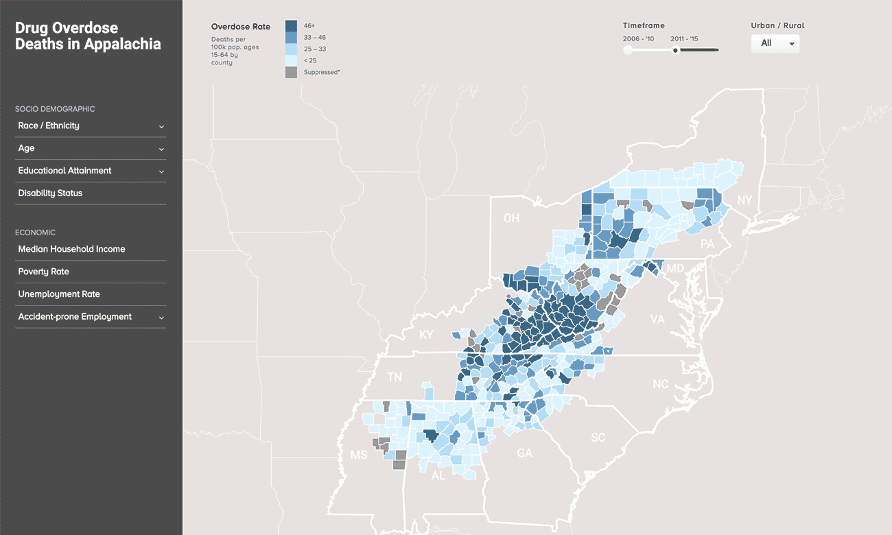

Visualizing Disease Vulnerability
NORC uses sophisticated digital tools to map the opioid epidemic
NORC is a pioneer in using geospatial mapping and other data visualization tools to help public health officials better understand and respond to a variety of risks. Working with the Appalachian Regional Commission, three units within NORC—the Walsh Center for Rural Health Analysis, the Health Media Collaboratory, and the Visualization Laboratory—are developing the infrastructure for an interactive geospatial data visualization tool that allows users to map overdose hotspots and overlay them with data related to the drivers of opioid addiction and death.